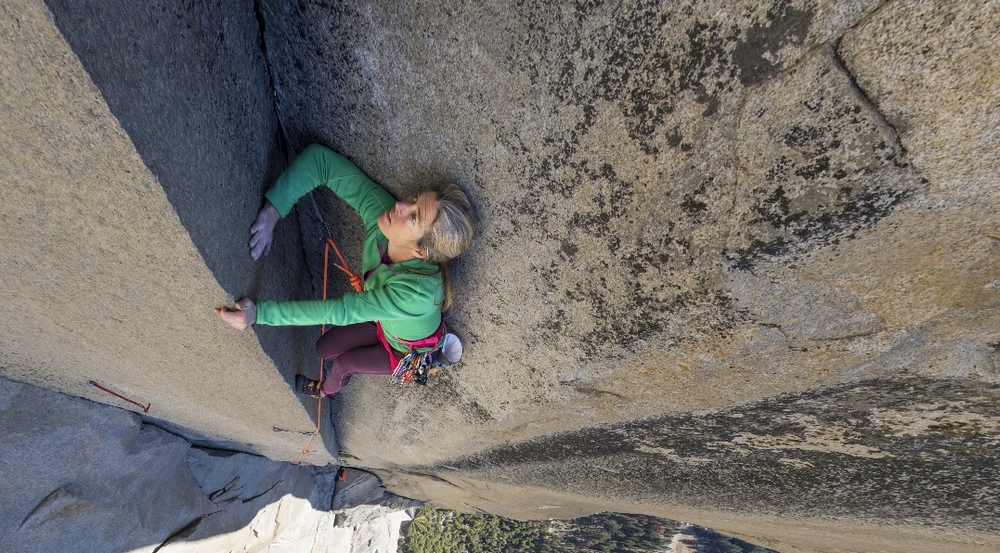

"It annoyed me to see sexist attitudes among climbers. Perhaps it was because I felt that climbing was the
first truly egalitarian activity I had participated in. No matter what our physical differences, with the
right combination of vision, desire and effort, just about any climb was possible." Lynn Hill
História da Lynn Hill
Lynn Hill nasceu no dia 3 de janeiro de 1961 em Detroit, Michigan, EEUU. Atlética, competiu como ginasta e corredora antes de descobrir a escalada em rocha com 14 anos. Vencedora de várias competições nacionais e internacionais, aperfeiçoou a técnica morando na Europa e viajando o mundo à procura de experiências e picos diversos. As suas performances entre os anos 1980 e 2000 puxaram para cima a percepção do possível para atletas mulheres. Nomeadamente, se tornou em 1991 a primeira mulher do mundo - três anos antes de qualquer outra - a escalar uma via de nível 5.14.
"If you feel like you want to climb 5.14, get after it! That's what I did. There were men around who said 'Oh, that's not possible - a woman can't do that'." Lynn Hill

A sua maior realização até hoje aconteceu em Yosemite. A via “The Nose”, da parede emblemática El Capitan, foi conquistada em 1958 por Warren Harding, demorando 45 dias para instalar os 800 pitons e 900 metros de cordas fixas requeridas. Ninguém considerava possível escalar a via em estilo livre, ou seja usando apenas pés e mãos. Porém, essa barreira do impossível foi quebrada em 1993 por Lynn Hill e o parceiro Brooke Sandahl. O universo da escalada, reconhecidamente um ambiente masculino, testemunhou uma mulher estabelecer um marco histórico no esporte. Um ano depois, o casal voltou para estabelecer um novo recorde na mesma via, mandando ela em menos de 24h.
Atualmente, uma proporção mais importante de mulheres brilha na escalada. Novas atletas encarnam a missão iniciada pela Lynn e seguem superando as barreiras do esporte. Em fevereiro de 2017, Margo Hayes, nascida na cidade de Boulder no Colorado onde a Lynn atua como treinadora, mandou o primeiro 5.15 feminino, cadenando a via espanhola La Rambla.